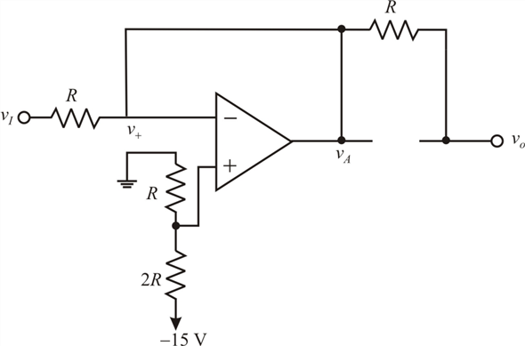

Refer to Figure P17.50 in the text book for the improved version of the precision half-wave rectifier circuit.
Apply voltage division rule to find the voltage at the non-inverting terminal of the op-amp.
The circuit acts as a comparator with a reference voltage of .
For , the op amp (inverting op amp) output goes to negative saturation level and the diode  conducts (forward bias) and the diode
conducts (forward bias) and the diode  is cutoff. Draw the circuit.
is cutoff. Draw the circuit.

Figure 1
By the virtual short at the inverting terminal, the voltage is,
No current flows through the resistor R.
Therefore, the output voltage is,
 goes to the positive saturation level. The diode
goes to the positive saturation level. The diode  is cutoff (reverse bias) and the diode
is cutoff (reverse bias) and the diode  conducts.
conducts.